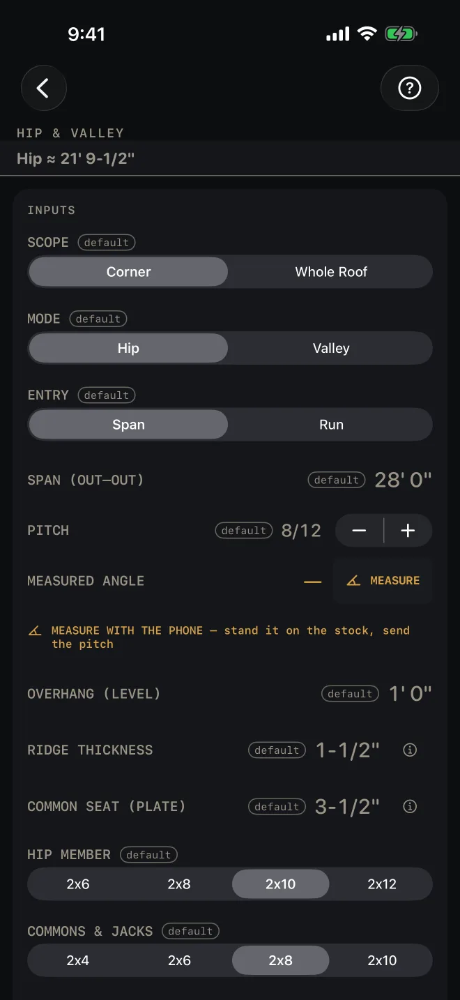
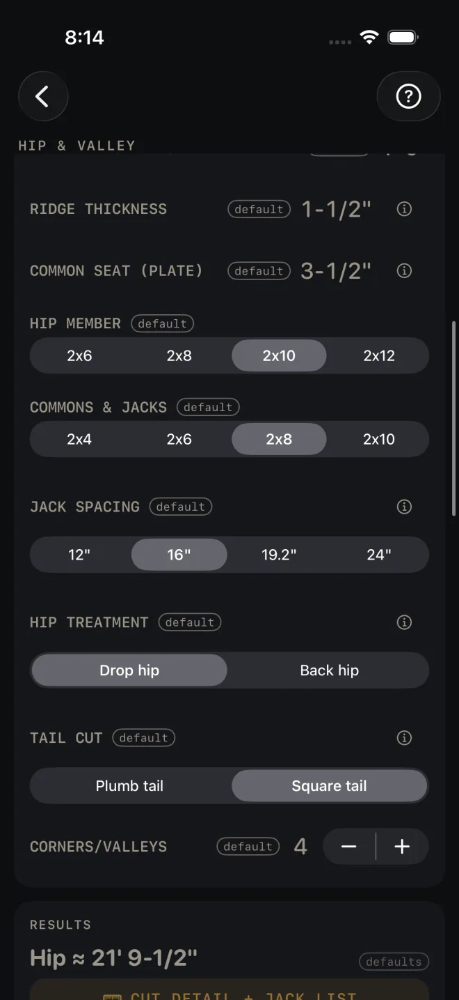
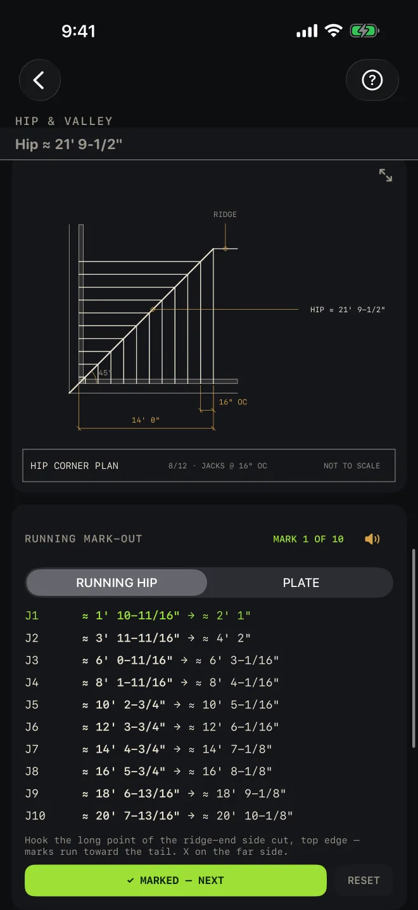

Hip & Valley
What it's for
Cutting a hip or a valley and the jacks that run into it. You give it the span, the pitch and the member sizes, and it gives you cut-ready lengths, every saw angle, the birdsmouth as cut, the jack list in pairs, a plan drawing, a cut card for each piece and a running mark-out for the jack positions. It is for a regular 90° corner with the same pitch on both sides. It does not size the members. Use Roof Rafter for the span check.
Step by step
This example uses the numbers the screen opens with.

1 2 3 4 5- SCOPE — Corner works out one hip corner. Whole Roof adds a BUILDING LENGTH field and counts the whole hip roof. Scope only shows in hip mode. The example is Corner.
- MODE — Hip or Valley. Changing it resets the corner count at the bottom of the inputs: four for a hip roof, one for a valley.
- ENTRY — Span if you have the building width, Run if you have the run.
- SPAN (OUT–OUT) — outside of wall plate to outside of wall plate. The example is 28' 0". With Run entry the field is RUN (PLATE → RIDGE CTR) instead: outside of the plate to the center of the ridge, measured level.
- PITCH — rise per 12 of run. The buttons step it by a half, from 1/12 to 24/12. Tap the number to type one.
- To match a roof that is already there, type its slope in degrees into MEASURED ANGLE. The button beside the row then reads → PITCH; tap it and the pitch field takes the exact figure. While the row is still empty that same button reads MEASURE and opens Angle Tools, as does the line under it, MEASURE WITH THE PHONE — stand it on the stock, send the pitch. Stand the phone on a rafter or on the sheathing and send the pitch back. See Angle Tools. Either way the pitch can land anywhere from 1/12 to 24/12; past that it is limited, and a note under the row says what the reading was.
- OVERHANG (LEVEL) — the commons' overhang, measured level and square off the plate. RIDGE THICKNESS — the ridge board. Half of it comes off each rafter's run. COMMON SEAT (PLATE) — the level seat cut of a common rafter on the plate. The hips and jacks are worked out from it.

8 9 10 11 12- The member picker reads HIP MEMBER or VALLEY MEMBER to match the mode. Pick the hip or valley stock there: 2x6 to 2x12. COMMONS & JACKS is the stock for the commons and jacks, 2x4 to 2x10. JACK SPACING is their on-center spacing: 12", 16", 19.2" or 24".
- HIP TREATMENT, hip mode only — Drop hip cuts the seat deeper so both sheathing planes land on the hip's edges. Back hip bevels the top edges instead. The results give you the other option's figure either way.
- TAIL CUT — Plumb tail or Square tail.
- CORNERS/VALLEYS — how many identical corners or valleys you are cutting, 1 to 8. It multiplies the piece counts on the cut cards, the cut list and the materials. In Whole Roof scope the stepper is replaced by CORNERS — 4, fixed by the plan in whole-roof scope.
- Read the answer: Hip ≈ 21' 9-1/2".
Reading the results
![Hip & Valley results: Hip 21' 9-1/2", the CUT DETAIL + JACK LIST button, then lines reading cut-ready, Rise 9' 4" and ridge top 9' 9-7/8" above plate, Plumb 25.2 degrees Level 64.8 degrees Bevel 45/45, Drop 3/8" or back at 23.1 degrees, birdsmouth as cut seat 8-15/16" heel 4-3/16" HAP 6", Common 16' 9" plumb 33.7 degrees HAP 6-3/8", Jacks diff 1' 7-1/4" 10 pairs per corner mtr 33.7 degrees bvl 45 degrees, Tail projection 1' 8-15/16", Sheathing angle 50.2 degrees, and the BASIS & WHAT WAS ASSUMED row](../shots/hip-valley--more.webp) 1
2
3
4
1
2
3
4
- The headline is the hip or valley length, ready to cut. The first line under the button says how: cut-ready — long point at ridge → heel, along the top edge. The ridge has already been taken off. In Whole Roof scope the headline is the ridge length and the hip moves to the first line, with the counts of commons, hips and jacks and the roof area after it.
- CUT DETAIL + JACK LIST opens the cutting page: the hip in elevation with its birdsmouth enlarged, a cut card for each piece that you swipe through, a button into Angle Tools with this roof's angles loaded, and the jacks listed in pairs, longest first. The cards are described below.
- The lines. The rise at the center and the height of the ridge top above the plate. Plumb, Level and Bevel for the hip. Drop or Back, with the other option in brackets. The hip birdsmouth as cut: seat, heel and HAP, with the drop already in it. The common rafter's length, plumb angle and HAP. Jacks: the difference in length from one to the next, pairs per corner, miter and bevel. The tail: the projection to the long point, and the distance from the bottom point to the heel along the stick. The sheathing angle for the sheets that land on the hip.
- BASIS & WHAT WAS ASSUMED — tap it. It lists exactly what was deducted from the commons, the hip and the jacks for the ridge and the hip thickness, so you do not deduct twice. It says how the drop or backing was applied, and that the numbers are for a regular 90° corner with equal pitches. It warns if the birdsmouth takes too much out of the commons.
In Corner scope this screen normally shows no check line. A red Hip member too shallow for the commons' plane — verify size line (or Valley) means the hip or valley stock is not deep enough to meet the commons' roof plane. Pick a deeper member. In Whole Roof scope two check lines show, Building length ≥ the span and Common span within the table, green when they pass. The first turns red if BUILDING LENGTH is not longer than the span, because a square plan is a pyramid with no ridge. The second turns red if the commons' span is off the table. Size them in Roof Rafter.
The cut cards
On the Cut Detail page, under CUT CARDS — SWIPE FOR EACH CUT, there is one card for each different piece: the hip or valley first, then the common, then every jack. Each card is a board drawn with its long-point length, the plumb-cut setback and the birdsmouth station, a title strip, and the marks in the order you make them. The head cut at the ridge end is labelled with the angle it is struck at: PLUMB 25.2° · DOUBLE 45° CHEEK on the hip or valley card, PLUMB …° · SIDE CUT 45.0° on a jack card, and the plumb angle alone on the common. The badge at the top right of the card is the count for the whole job:
- The hip or valley card reads CUT 4 in the example — one per corner, so the number is the CORNERS/VALLEYS count.
- The common card reads REFERENCE CUT. It is there for the angles, not for a count.
- A jack card reads CUT … TOTAL · 2 PER CORNER (per valley in valley mode): the total across every corner, and the pair at each one. When there is one corner it reads plain CUT 2. A green line under the marks says 1 RIGHT + 1 LEFT per corner — offcut is the opposite hand.
Under the cards, JACKS — ONE CORNER · CUT IN PAIRS lists each jack with its pair count, its length and its miter and bevel. The line under the list: Pairs land opposite across the hip — offcut is the opposite hand. Nail the center pair first to hold it straight. In valley mode the jacks have no plate, no birdsmouth and no tail, and their cards say so. For the bevel screen and the printed template, see Angle Tools and cut cards.

5 6 7- The drawing is the corner in plan: plates, hip, ridge and every jack at its spacing, with the run and the spacing dimensioned. In Whole Roof scope it is the whole roof. Pinch to zoom, drag to pan, double-tap to reset. The expand button opens it full screen. See Reading the drawing.
- RUNNING MARK-OUT gives the position of every jack as a running tape, so you hook once and mark down the stick. Each jack has two figures, its near face and its far face. RUNNING HIP is the tape up the hip. PLATE is the tape along the wall plate from the corner. In valley mode the tapes are RUNNING VALLEY and RIDGE, because valley jacks touch no plate. The line under the list says where to hook.
- The speaker reads the marks aloud. See Mark-out and speak.
Under the mark-out, MATERIALS lists the stock. At the bottom, CUT SHEET, the small list button beside it, CUT LIST, SEND LIST and OPTIMIZE stay grey until you change at least one input. SAVE stays lit, but while every input is still a default a tap only answers Enter your job's numbers first and saves nothing. CUT SHEET makes a PDF with the cut detail drawing, SAVE keeps the result in History, CUT LIST puts the hip and each jack pair on the Lock Screen, SEND LIST sends a checkable list to another phone, and OPTIMIZE sends the jacks, at their full length with the tail, to the Cut List Optimizer. While a cut list from this screen is running, the piece you are on shows green in the plan and in the jack list, and the cut cards open on it.
Common mistakes
- Deducting for the ridge again. The lengths are cut-ready. Open BASIS & WHAT WAS ASSUMED to see what has already come off.
- Measuring from the wrong point. Lengths run along the top edge, from the long point at the ridge to the heel of the seat cut. The tail is given separately.
- Reading a jack card's total as the count for one corner. The badge is the whole job. The per-corner pair is after the dot, and the green hand line says one right and one left.
- Typing a run into the span field. Check ENTRY first. A run entered as a span gives a roof half the size.
- A different seat on Roof Rafter. COMMON SEAT (PLATE) sets the height above the plate for everything here. Use the same seat on both screens for the same roof.
- Using it for an odd corner. The numbers are for a 90° corner with equal pitches.
Related
- Roof Rafter — commons, ridge and the span check
- Roofing
- Angle Tools and cut cards
- Mark-out and speak
- Reading the drawing
- Cut sheets and 1:1 templates
- Cut list on the Lock Screen
- Send to the Cut List Optimizer